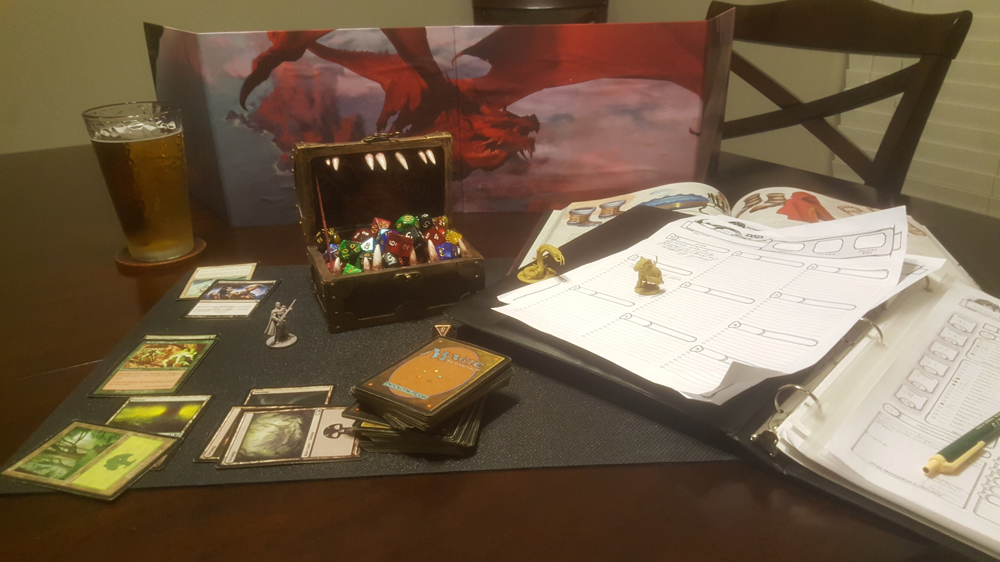

A little bit about me I love gaming, both table-top and videogames. In the "Gaming" tab you will find a list of my favorite games, and some
awesome tools to help new Game Masters (GM's). So whether you're interested in talking about some of your favorite video games;
or are just wondering what the heck table-top gaming is all about take a look.
My wife and I make homebrew beer, follow the "Brewing" tab to see what beers we've made. As well as some tips that may help
ease you into the world of home brewing
I am also a pretty big movie buff. If your looking for some recommendations, or just want to see what kind of movies I am into. You know what tab to click.